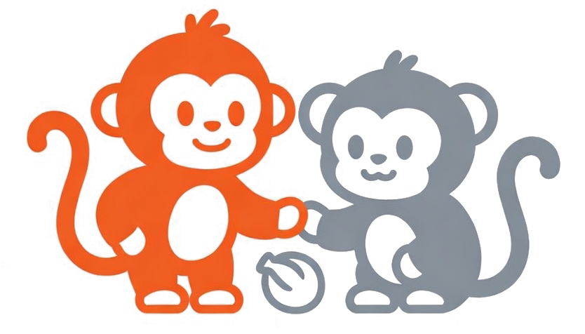
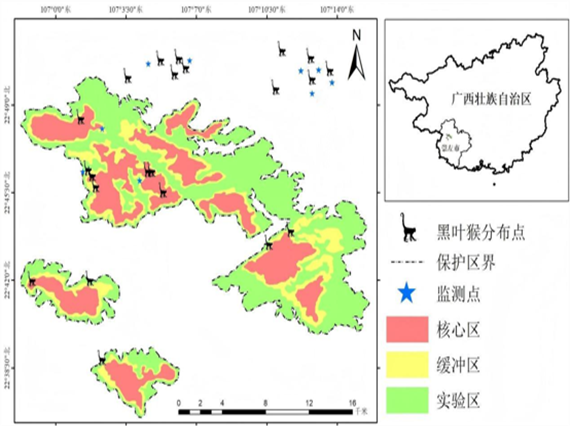
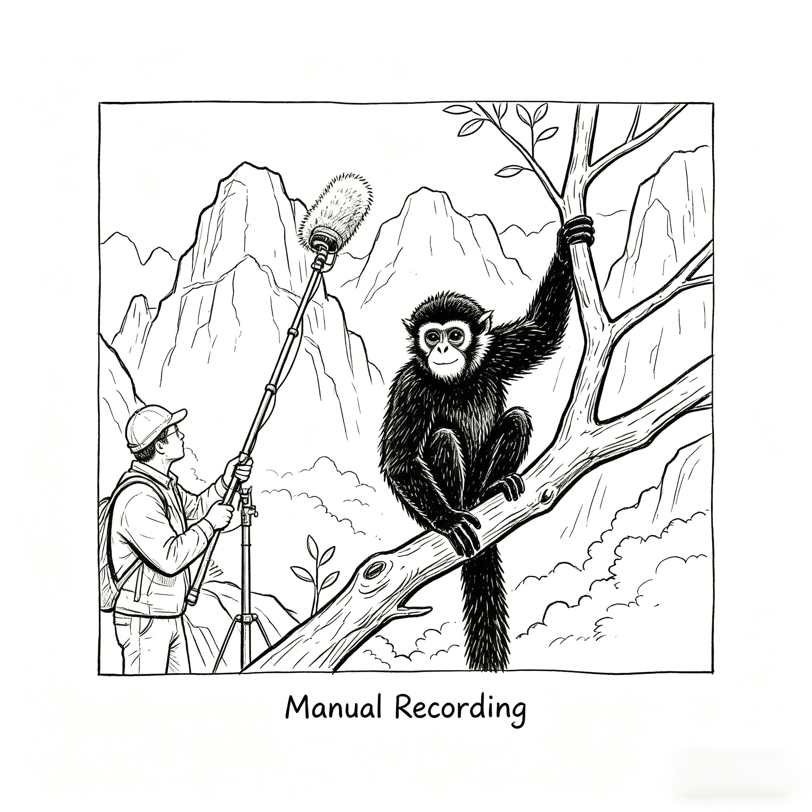
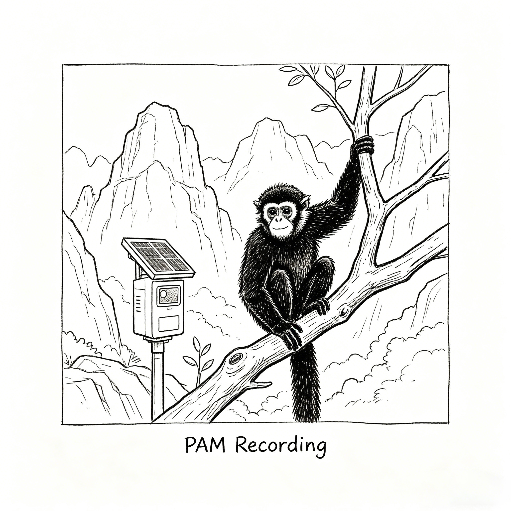

我们的工作
用声音监测守护黑叶猴的未来


音察灵猴，声寻其踪：基于深度学习的黑叶猴声学监测研究
用声音监测守护黑叶猴的未来
黑叶猴是世界自然保护联盟（IUCN）红色名录中的濒危（EN）物种，也是中国的国家一级保护动物。目前，全球野生黑叶猴数量不足2000只，其中约1700只分布在中国。 得益于持续的保护努力，多个核心栖息地的种群数量实现了 历史性增长。

鼠标悬停或点击地图标记，可查看各栖息地最新种群信息


